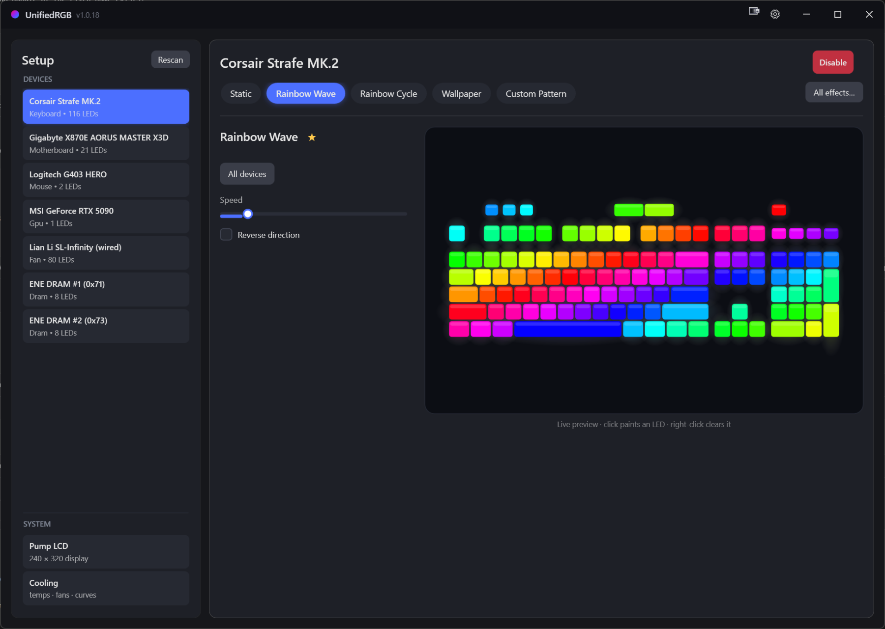
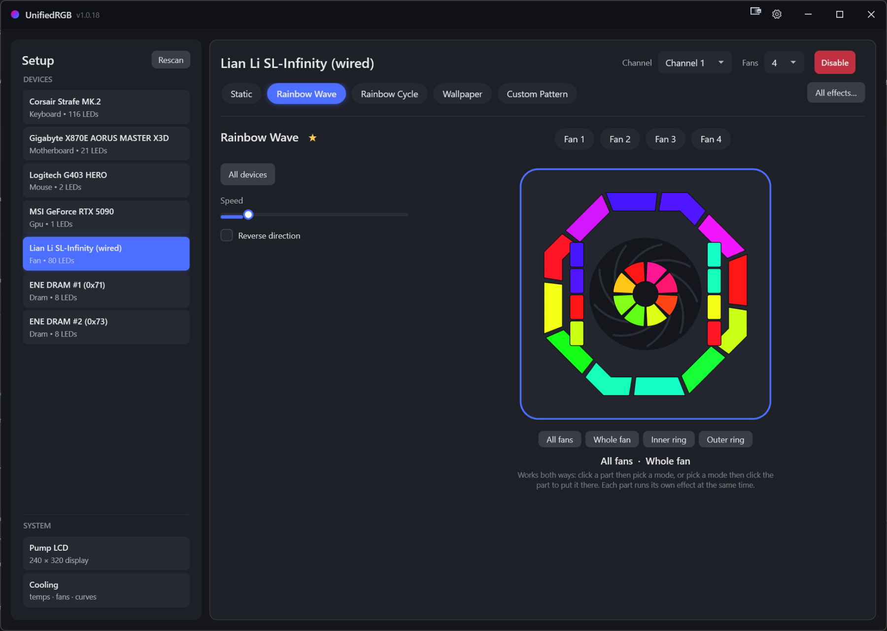
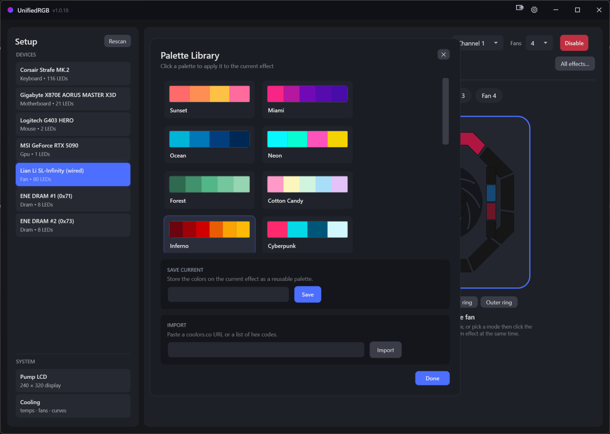
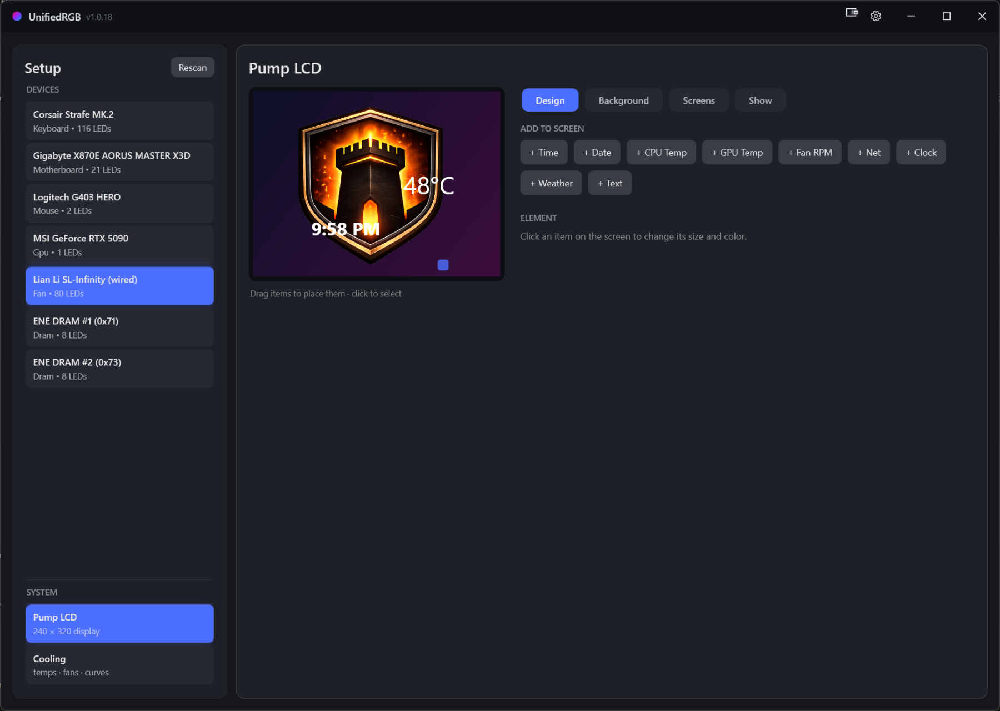
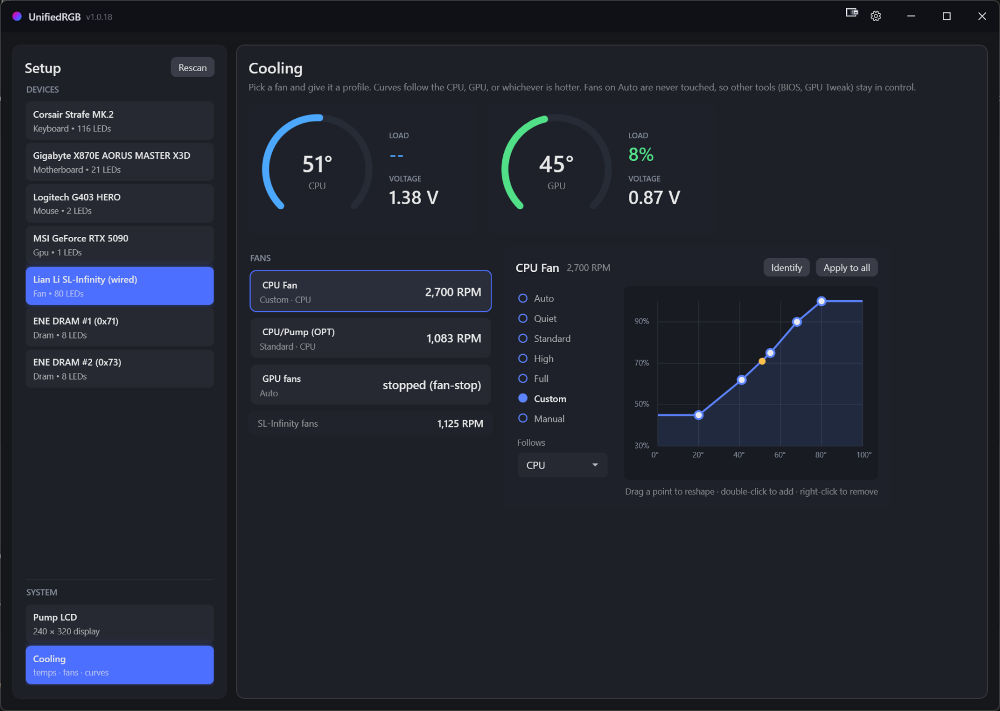

Lighting, fan curves, and pump-LCD dashboards for every brand in your PC. One tray app instead of four vendor launchers. No account, no telemetry, no subscription.
v1.0.20 · one self-contained .exe · no installer,
no .NET · free and GPLv2

Rainbows, meteors, plasma, aurora, candle, rain, Matrix. Audio-reactive bars and pulses that move the instant sound does. Screen ambient, Wallpaper Engine capture, and Razer Chroma game sync with no Razer software installed.
Run one effect everywhere, or a different one on each fan ring.

A real wheel, with brightness, hex, and RGB entry. The Palette Library keeps presets and your own sets, and imports straight from a coolors.co link or a pasted list of hex codes.

Drag CPU and GPU temps, clocks, date, fan RPM, network throughput, and weather onto a Thermalright 240×320 screen. Put your own image or GIF behind them. Build several screens and sequence them.

Curves follow the CPU, the GPU, or whichever runs hotter. Live gauges, per-fan profiles, drag-to-edit points, and a failsafe that hands control back to the BIOS if anything goes wrong.
Fans left on Auto are never touched, so your BIOS profiles keep working.

Under 5% of one core with the window open, near silent in the tray. Drivers skip duplicate frames, so your USB bus never carries packets that change nothing.
Save setups, switch them with Ctrl+Alt+1…9, even inside
games. Per-app auto-switching, night mode, master brightness, per-device
disable.
One click from GitHub Releases, checked against the published SHA-256 before it swaps itself. Turn the check off and the app makes no network requests at all.
These are the other cross-vendor tools, built to drive your whole machine rather than one company's products. Single-brand software (iCUE, Synapse, L-Connect, RGB Fusion, Armoury Crate) isn't compared here, because it only lights its own hardware. That's the pile this replaces.
Every claim is about what the software does, not how good it is. Where a rival wins, that's on this page too.
| UnifiedRGB | OpenRGB | SignalRGB | Artemis | Aurora | |
|---|---|---|---|---|---|
| Price | Free, all features | Free | Free tier, paid Pro | Free | Free |
| License | GPLv2, open source | GPLv2, open source | Closed source | PolyForm Noncommercial source available |
MIT, open source |
| Lighting across brands | Yes | Yes | Yes | Yes | Yes |
| Breadth of devices | ~12 native families, plus the OpenRGB bridge |
1,200+ devices | Very large library | Per-brand plugins | Major peripheral brands |
| How it reaches hardware | Directly (HID, SMBus, I²C) | Directly | Its own drivers | RGB.NET plugins | SDK wrappers Colore, RGB.NET |
| Uses OpenRGB for the rest | Bundled and automatic devices we drive natively are excluded from it |
It is OpenRGB | No, conflicts with it | Yes, once you install OpenRGB and start its server |
Yes, once you install OpenRGB and start its server |
| Fan curves | Yes, free | No, lighting only | Pro feature | No | No |
| Temps and monitoring | Yes, free | No | Pro feature | No | No |
| LCD screen dashboards | Yes, free | No | Custom faces are Pro | No | No |
| Game lighting sync | Chroma games, no Razer software | Third-party plugins | Many integrations | Deep profile engine | Its whole specialty |
| Account to use it | Never | Never | Sign-in for Pro | Never | Never |
| Ads or upsells | None | None | Ad-free is a Pro feature | None | None |
| Platforms | Windows 10/11 | Windows, Linux, macOS | Windows | Windows | Windows |
If one of these matters more to you, use that tool. You can run UnifiedRGB alongside most of them.
It's retired. rgbsync.com says so outright, and its team went on to build SignalRGB.
It also shows the difference in approach. JackNet drove the vendor apps through their SDKs, so iCUE, Aura, and Synapse all had to stay installed underneath it. UnifiedRGB talks to the hardware itself. That's more work per device, which is why our list is shorter, and it's why nothing else is left running on your machine.
Native drivers, talking straight to the hardware. Anything not listed can still run through the optional OpenRGB bridge, and hardware we drive natively is never handed to it.
| Device | How it's driven |
|---|---|
| Corsair Strafe MK.2 | HID |
| SteelSeries Apex keyboards | HID |
| Gigabyte RGB Fusion boards (IT5711) and ARGB headers | HID |
| Logitech G403 HERO | HID++ 2.0 |
| Razer Basilisk V3 Pro, including DPI stages and polling rate | HID, no Synapse |
| MSI GeForce GPUs | I²C via NvAPI |
| ENE DRAM (G.Skill and friends) | SMBus via PawnIO |
| Lian Li SL-INF wireless fans | WinUSB and RF |
| Lian Li SL-Infinity wired hub | HID |
| Sayo devices | HID |
| Thermalright pump LCD (240×320) | HID |
| Motherboard fans and temperatures | Super I/O via PawnIO |
Missing your hardware? Open a device request. Protocol notes and USB captures are the fastest route to a driver.
Direct hardware access means kernel-level access. UnifiedRGB installs PawnIO, a signed, module-constrained kernel driver, for CPU temperatures, SMBus, and fan control. Know that before you run it.
It follows OpenRGB's proven ENE detection and writes only to controllers it detects. As with every tool in this category, writing to the wrong SMBus device can permanently damage hardware.
A signing certificate costs money this project doesn't take, so SmartScreen warns on first run. Click More info, then Run anyway. Every release publishes a SHA-256, and you can build it yourself.
Free, with no paid tier to upsell you to. The whole thing is on GitHub under GPLv2, including the reverse-engineered device protocols. The catch is the honest one: it supports far less hardware than the big tools, and one person maintains it.
Once at startup, to check GitHub Releases for a new version. Switch that off and it makes no network requests at all. No telemetry, no analytics, no account. The "Report a problem" button writes a file to your Desktop and opens a pre-filled GitHub issue, and nothing is uploaded unless you post it. This website has no trackers and loads nothing from third parties either.
It bundles the whole .NET runtime, so there's nothing to install and no framework to keep in sync. One file that runs.
Usually, but two programs writing the same device will fight over it and the lighting flickers between them. Let UnifiedRGB own what it drives natively and close the vendor app. Its OpenRGB bridge is managed automatically and never touches hardware UnifiedRGB already drives.
Try the OpenRGB bridge first. It covers over a thousand devices and turns on with one checkbox. If that misses too, open a device request. Captures and protocol notes make a driver far more likely.
No. It's a Windows app, and the kernel-access parts are Windows-specific. On Linux, OpenRGB is the right answer.
One app, one download, and nothing else left running.